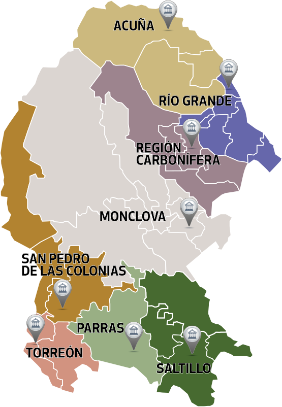

Conócenos Estructura Tribunal Superior de Justicia Órganos Jurisdiccionales Juzgados por distrito De clic en el Distrito Judicial en el mapa o elija una opción al final de esta página.  Acuña Monclova Parras de la Fuente Río Grande Regíon Carbonífera San Pedro de las Colonias Torreón Saltillo